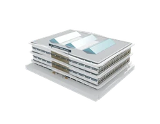
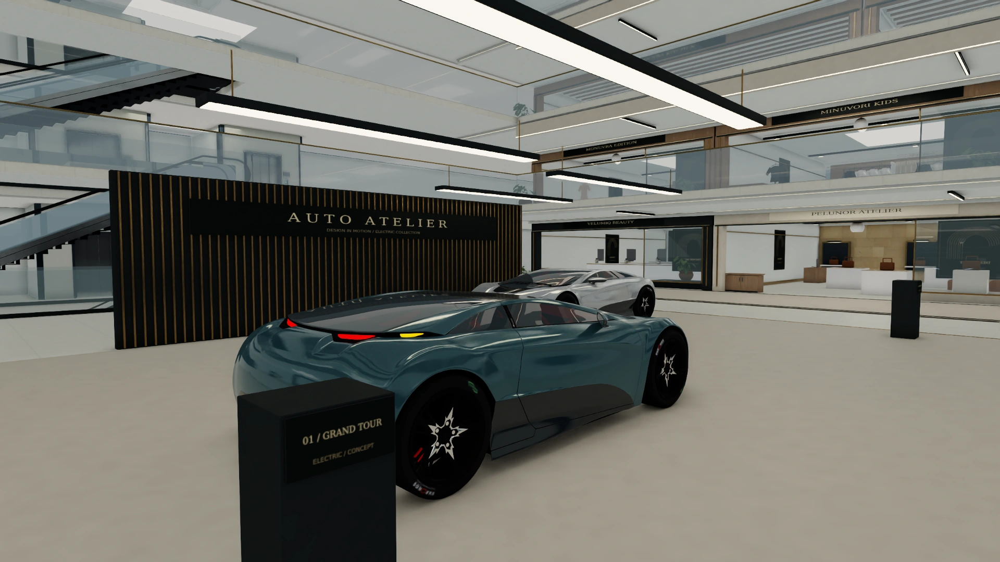
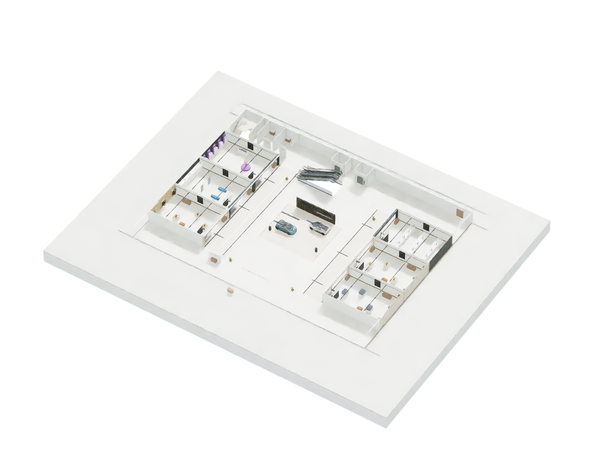

地下层到地面层
使用电梯从原生一层到二层，即展示 B1 到 1F；不使用楼梯或扶梯。
通用任务 · 双本体验证待完成ENVIRONMENT 03 / 9
03SHOPPING / DINING / CINEMA


Interior
INSIDE THE ENVIRONMENT
Select a level to explore its interior.

CAPABILITIES & EMBODIMENTS
通用任务面向 FWMiniPiper 与 G1；专用任务测试指定本体的特有能力。当前均为待验证设计，不表示已完成物理执行。
原生 1=展示 B1 餐食与生鲜；2=1F 入口与零售；3=2F 服饰运动；4=3F 餐饮；5=4F 餐饮；6=5F 影院。所有评分使用原生楼层 ID。
使用电梯从原生一层到二层，即展示 B1 到 1F；不使用楼梯或扶梯。
通用任务 · 双本体验证待完成原生一层 B1 出发，识别停运梯并改乘另一可用电梯到原生六层 5F 影院公共区；不走扶梯。
通用任务 · 双本体验证待完成需绑定可复现停运或恢复初态、可见提示、可行时间预算和通行历史裁判；恢复不得依赖无限等待或策略可调用的调试接口。
尚未启用正式评测；需完成初态配置、成功判据及指定本体的完整物理轨迹验证。
从北入口门一侧打开门，通过后退出并恢复关闭；检查门扇与身体的完整通行空间。
通用任务 · 双本体验证待完成滑开 B1 Guest Service 交接台订单柜，再关闭；不包含商品取送，也不要求身体进入柜内。
通用任务 · 双本体验证待完成已安装独立滑门柜；夹爪可达、开合轨迹及裁判待验收。
尚未启用正式评测；需完成初态配置、成功判据及指定本体的完整物理轨迹验证。
把指定公共区域照明回路设为营业清单要求的状态，保持其他回路不变。
通用任务 · 双本体验证待完成在本场景指定可达空调面板上观察初态，将开关、模式和设定值改为任务要求；至少一项需改变，其他设备不变。评分使用面板与控制器实际状态，不要求室温达到设定温度。
通用任务 · 双本体验证待完成需验证两种夹爪不误触相邻按键，并接入模式、开关和设定值裁判；不把按钮几何存在当作可按或热效果证据。
尚未启用正式评测；需完成初态配置、成功判据及指定本体的完整物理轨迹验证。
从 B1 面食店和 5F 影院饮品点各取一件密封包装，送到 1F 北入口交接点；允许分次运输。
通用任务 · 双本体验证待完成需按本任务配置动态物品、身份或数量标签、交接与暂放区域及指令专属历史判据；源站点存在不代表新任务初态已实现。
尚未启用正式评测；需完成初态配置、成功判据及指定本体的完整物理轨迹验证。
在 2F Guest Service 将三件刚性包装退货按服饰与运动标签分到绑定分类区，模糊件进入复核区。
通用任务 · 双本体验证待完成需按本任务配置动态物品、身份或数量标签、交接与暂放区域及指令专属历史判据；源站点存在不代表新任务初态已实现。
尚未启用正式评测；需完成初态配置、成功判据及指定本体的完整物理轨迹验证。
以 5F 影院饮品点为补货目标，从同层服务点逐件补齐指定数量，只使用动态任务物品。
通用任务 · 双本体验证待完成需按本任务配置动态物品、身份或数量标签、交接与暂放区域及指令专属历史判据；源站点存在不代表新任务初态已实现。
尚未启用正式评测；需完成初态配置、成功判据及指定本体的完整物理轨迹验证。
从 B1 Fresh Market Online Orders 取指定订单的密封轻型包装，送到 1F 南入口；核对订单身份。
通用任务 · 双本体验证待完成需按本任务配置动态物品、身份或数量标签、交接与暂放区域及指令专属历史判据；源站点存在不代表新任务初态已实现。
尚未启用正式评测；需完成初态配置、成功判据及指定本体的完整物理轨迹验证。
分别从 3F 火锅店和 4F 披萨店取刚性密封外卖，送到 1F Guest Service 的两个订单区，禁止混单。
通用任务 · 双本体验证待完成需按本任务配置动态物品、身份或数量标签、交接与暂放区域及指令专属历史判据；源站点存在不代表新任务初态已实现。
尚未启用正式评测；需完成初态配置、成功判据及指定本体的完整物理轨迹验证。
将 1F 玩具点和 2F 运动点的两种包装商品配成同一可见订单，逐件送到 1F Guest Service 并核对齐套。
通用任务 · 双本体验证待完成需按本任务配置动态物品、身份或数量标签、交接与暂放区域及指令专属历史判据；源站点存在不代表新任务初态已实现。
尚未启用正式评测；需完成初态配置、成功判据及指定本体的完整物理轨迹验证。
将 5F 影院饮品点指定未开封包装送回同层 Guest Service，然后关闭清单指定灯光与空调；其他营业区不变。
通用任务 · 双本体验证待完成需按本任务配置动态物品、身份或数量标签、交接与暂放区域及指令专属历史判据；源站点存在不代表新任务初态已实现。
尚未启用正式评测；需完成初态配置、成功判据及指定本体的完整物理轨迹验证。
在商场从原生一层乘上行扶梯至二层；检查踏板接触、全身到达及离开末端。
专用任务 · 待本体验证FWMiniPiper 尚无踏步承载、上下梯与姿态稳定完整证据，不能放入两本体共同任务集。
尚未启用正式评测；需完成初态配置、成功判据及指定本体的完整物理轨迹验证。
分别从 3F 火锅店和 4F 披萨店取刚性密封外卖，送到 1F Guest Service 的两个订单区，禁止混单。本专用任务要求两件包装均稳定装入车载篮筐后再开始交付，运输途中保持订单区分，逐件取出并释放到正确交接区域。
专用任务 · 待本体验证测试 FWMiniPiper 车载篮筐的多件承载、订单区分与再抓取；需验证篮内双件空间、总负载、抗滑和手臂取放路径，不要求 G1 配备相同篮筐。
尚未启用正式评测；需完成初态配置、成功判据及指定本体的完整物理轨迹验证。